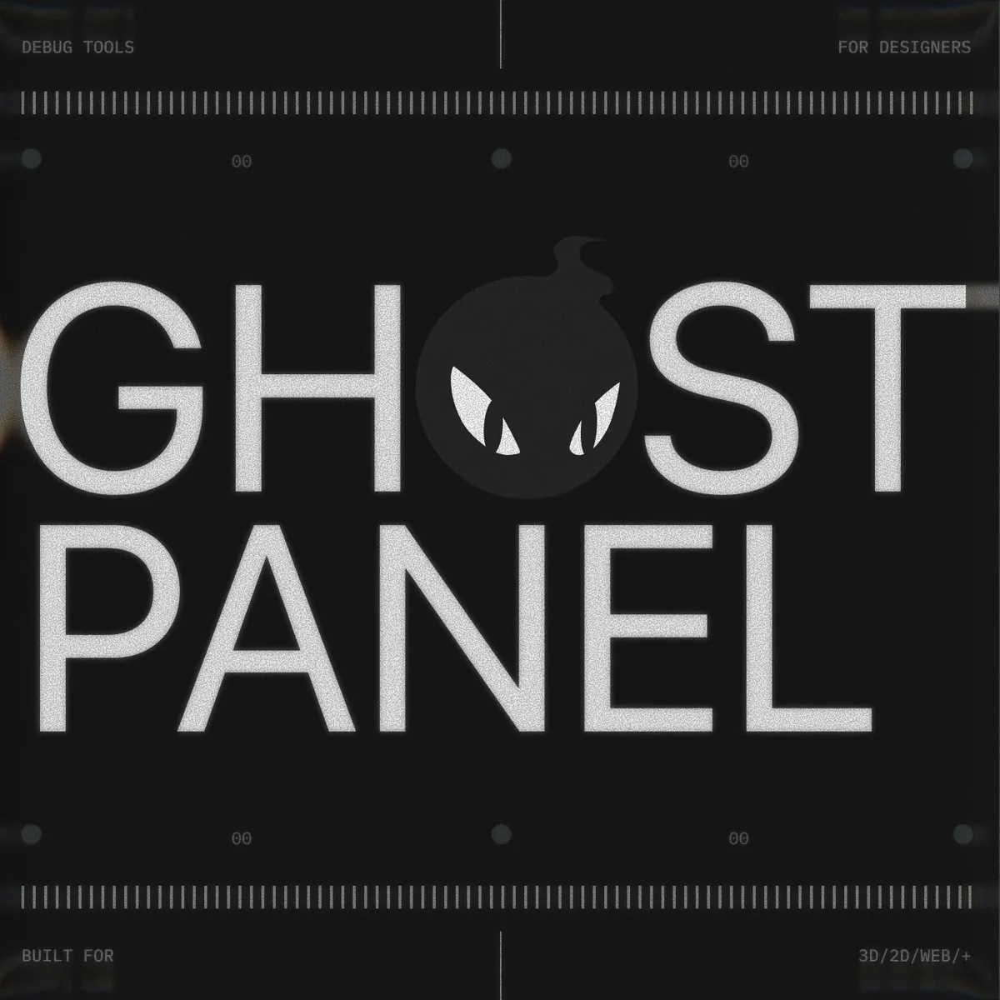

A self-aware control panel for the web. Drops into any Three.js scene, 2D canvas, or DOM page — auto-detects what's there, mounts the right controls, and stays out of the way until you press Shift+D.
Ghost Panel is a single function — createGhostPanel(options) — that walks your project on load, registers every named mesh / light / camera / DOM adapter it finds, and surfaces the right controls on selection.
It's framework-agnostic at the core, ships first-party adapters for React, Solid, Svelte, and Vue, and has a UMD bundle for plain <script> tags. Three.js is an optional peer dependency.
npm install ghost-panel
npm install three # peer dep, only if you're using Three.js
Or load the UMD bundle directly:
<script src="https://unpkg.com/ghost-panel/dist/ghost-panel.umd.js"></script>
Pass your scene + camera + renderer. Ghost Panel auto-detects 3D, registers everything in the scene, and mounts the right workflows.
import { createGhostPanel } from 'ghost-panel'; const ui = createGhostPanel({ scene, camera, renderer, title: 'Inspector', });
Open localhost. Press Shift+D to toggle panels. Click any object to inspect it. Shift+A opens the add menu.
The core ESM is framework-agnostic. First-party adapters wire lifecycle for every popular front-end. Pick yours:
Every method on the ui handle returned by createGhostPanel(options). Options are documented inline.
| Option | Type | Description |
|---|---|---|
| scene | THREE.Scene | Auto-detects 3D workflow + scans for objects. |
| camera | THREE.Camera | Used by the click-to-select raycaster and gizmo. |
| renderer | THREE.WebGLRenderer | Source of the canvas for pointer events. |
| controls | OrbitControls | Optional — focus / POV camera switches sync target here. |
| workflow | string[] | Force-enable specific workflows (skips auto-detection). |
| workflowOpts | object | Per-workflow config — background, backgroundTargets, tracks, uniforms, etc. |
| title | string | Inspector panel title (default 'Inspector'). |
| scenePanel | boolean | Show the left scene/outliner panel (default true). |
| visible | boolean | Initial visibility (default true). |
| liquidGlass | boolean | Apple-style backdrop blur skin. |
Folder with addSlider, addColor, addCheckbox, addSelect, addCurveEditor, addVec3, addDial, addButton, addTrigger, addSequence, and more. Every value control auto-records undo.addFolder call).{ additive: true } to shift-click style add it to the multi-selection.THREE.Group. Children keep their world transform. Pushes undo. Bound to ⌘G._group. Bound to ⇧⌘G..clone(); plain 2D shapes deep-clone the bag-of-numbers.{ undo(): void, redo(): void, label?: string, coalesceKey?: string }. Cmd+Z / Cmd+Shift+Z are wired by default.Four runnable examples. Each one boots Ghost Panel against a different host: